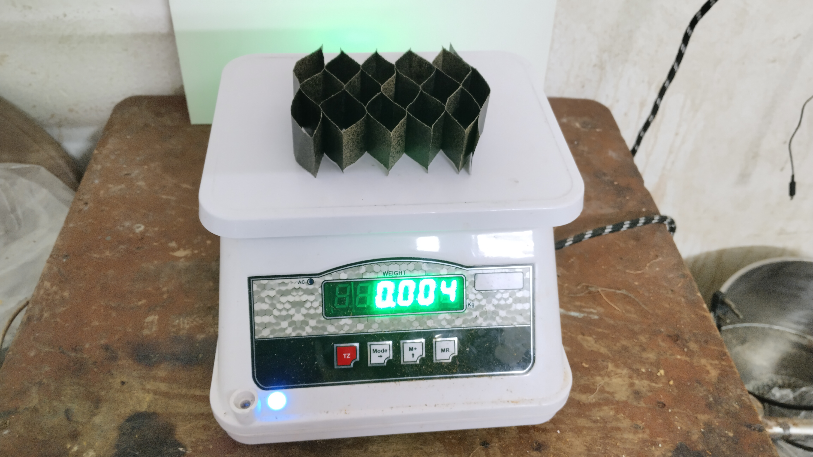
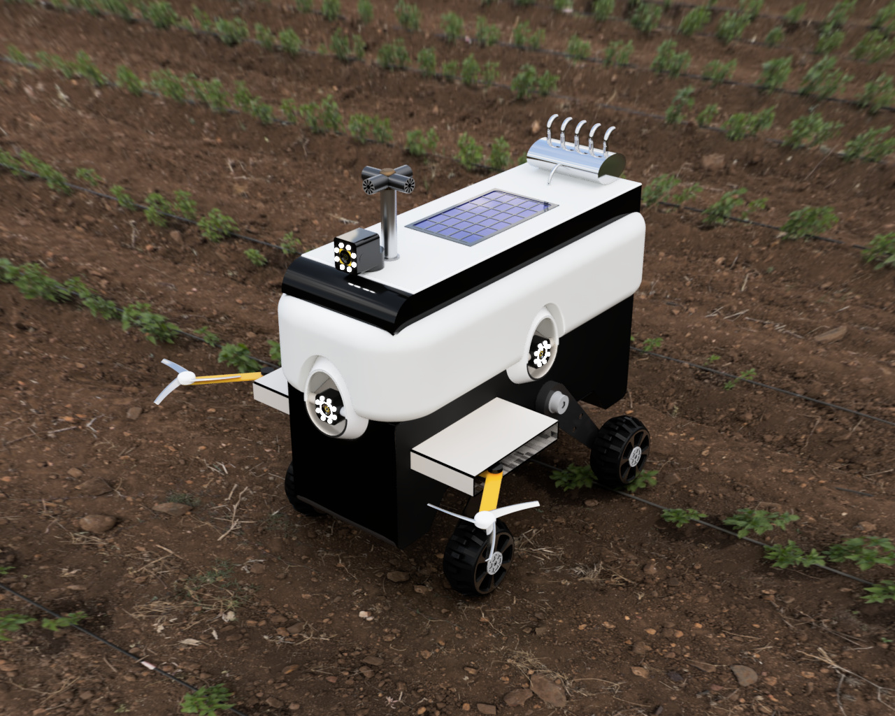
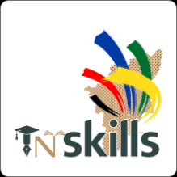
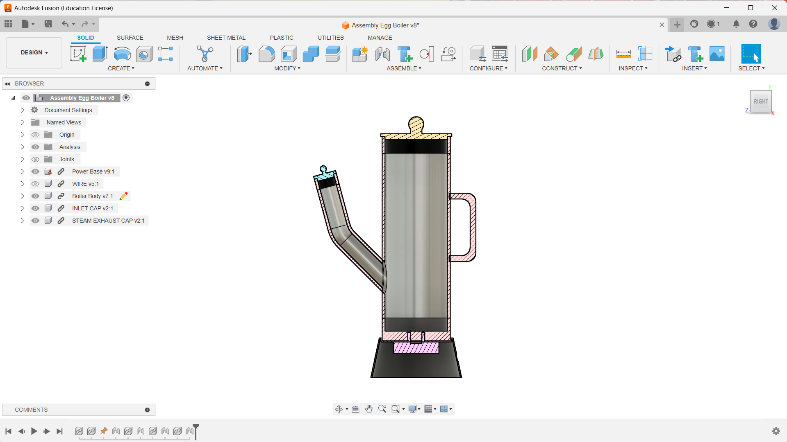

L&T Techgium is a prestigious annual internship program offered by Larsen & Toubro Limited (L&T), one of India's largest multinational firms specializing in technology, engineering, construction, manufacturing, and financial services. The Techgium program is designed to provide hands-on experience to engineering students from reputed institutions across India. It offers opportunities to work on real-world projects under the guidance of industry experts, fostering innovation and practical learning in diverse fields such as mechanical, electrical, civil, and software engineering. L&T Techgium aims to groom future engineering talent by offering a platform for students to apply classroom knowledge to industry challenges and contribute to L&T's legacy of excellence and innovation.

In response to the increasing global focus on sustainability and environmental responsibility, there is a pressing need for innovative packaging solutions. Addressing this, we propose a Sustainable Kraft Paper-Based Cushioning System for Packaging. Unlike traditional materials such as plastic foam and bubble wrap, which contribute to environmental pollution and are non-biodegradable, our approach utilizes Kraft paper, a renewable and biodegradable material. The system involves shaping Kraft paper into tailored forms and layering it to provide effective cushioning for various products during transit. This method not only offers robust protection against shocks and vibrations but also supports environmental sustainability by minimizing ecological impact. By leveraging Kraft paper's versatility and customization potential, this system ensures both functional packaging needs and eco-conscious practices are met, making it an ideal choice for industries seeking sustainable packaging solutions.
Autodesk Fusion 360 software played a pivotal role in developing our Agriculture Inspecting Robot (A.I.R.). It enabled precise design and optimization of key features such as GPS navigation, sensor mounts, and the blade cutter mechanism. Fusion 360's parametric modeling and simulation capabilities ensured the robot's reliability in various agricultural conditions. Its cloud-based platform facilitated seamless collaboration, allowing real-time access to design data and simulations. By leveraging Fusion 360, we achieved both structural integrity and energy efficiency, integrating solar panels for sustainable operation in the field.

Introducing "Naan Mudhalvan," our innovative Agriculture Inspecting Robot (A.I.R.) designed for the Autodesk Fusion 360 Design challenge. A.I.R. revolutionizes agricultural technology with its autonomous capabilities, navigating cornfields using GPS to assess crop health. Equipped with RGB cameras, LIDAR, and GPS sensors, A.I.R. collects crucial data on plant traits and stress responses, which is then analyzed and stored on a dedicated website. Beyond inspection, it features a blade cutter for precise crop cultivation and integrates a stem-mounted sensor for plant growth measurement. Solar panels enhance energy efficiency, while a fertilizer spraying system ensures optimal crop nutrition. A.I.R. exemplifies cutting-edge agricultural robotics aimed at sustainable farming practices and enhanced yield management.

The TNSKILLS competition is a prestigious platform that showcases innovative skills and talents across various fields. It provides participants with opportunities to demonstrate their expertise and creativity through practical challenges and projects. This competitive environment fosters learning, collaboration, and the development of cutting-edge solutions in response to real-world challenges. Participants engage in rigorous evaluations and assessments, aiming to highlight their unique contributions and advancements in their respective domains.

I developed an innovative egg boiler that incorporates a unique working principle: inspired by the combination of a normal kettle and the phenomenon of lava lamps. The design features a mechanism where the eggs' boiling status is indicated by their buoyancy. When the egg is not boiled, it sinks, and once boiled, it floats—providing a simple and intuitive way to determine the egg's readiness without the need for timers or manual checking. This approach not only enhances user convenience but also adds an engaging and interactive element to the egg boiling process, making it both efficient and visually interesting.